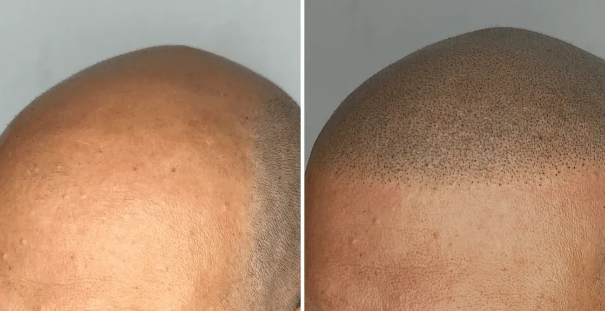

On associe souvent la micropigmentation capillaire à des hommes jeunes, en pleine chute de cheveux. Pourtant, une part importante de nos clients ont 50 ans et plus. Et pour de bonnes raisons : à cet âge, la calvitie est souvent installée depuis longtemps, le résultat est plus prévisible, et la tricopigmentation répond à des besoins bien spécifiques, comme celui d'unifier un cuir chevelu marqué par des années de soleil.
La tricopigmentation a-t-elle une limite d'âge ?
Non. Il n'existe aucune limite d'âge à la tricopigmentation, tant que le cuir chevelu est en bonne santé. Nous accompagnons régulièrement des clients de 50, 60 et parfois 70 ans, avec des résultats tout aussi naturels et durables qu'à 30 ans.
La seule condition est une évaluation en consultation pour s'assurer que la peau ne présente pas de contre-indication (pathologie cutanée active, cicatrisation compromise), quel que soit l'âge du patient.
Pourquoi 50 ans est souvent le bon moment
Plusieurs raisons expliquent pourquoi la tricopigmentation séduit particulièrement après 50 ans :
- Une calvitie stabilisée : contrairement à un homme de 25 ans dont l'alopécie androgénétique continue d'évoluer, la perte capillaire est souvent stabilisée après plusieurs décennies. Le résultat de la tricopigmentation reste donc cohérent et n'a pas besoin d'être régulièrement réajusté à une chute qui progresse encore.
- Un quotidien simplifié : fini le rasage irrégulier, les zones dégarnies qui contrastent avec le reste du crâne, ou les essais de coiffures pour camoufler les golfes. L'effet crâne rasé uniforme retire une contrainte du quotidien.
- Une image plus dynamique : un crâne rasé net et bien défini est aujourd'hui perçu comme un choix assumé plutôt qu'une fatalité, à tout âge.
Masquer les petites taches de soleil sur le dessus du crâne
C'est un besoin très fréquent chez les hommes de 50 ans et plus, chauves depuis longtemps : après des années d'exposition solaire sur un crâne dégagé, il n'est pas rare de voir apparaître de petites taches pigmentaires (lentigos solaires) sur le dessus de la tête, souvent plus marquées que le reste de la peau.
La tricopigmentation ne traite pas ces taches sur le plan dermatologique, mais son maillage dense de micro-points recrée une teinte homogène sur l'ensemble du cuir chevelu. Résultat : les irrégularités de pigmentation naturelle sont visuellement estompées et le crâne retrouve un aspect uniforme, y compris sur les zones marquées par le soleil.
Bon à savoir : en cas de tache suspecte (asymétrique, qui évolue, qui change de couleur), une consultation dermatologique préalable reste indispensable avant toute séance, la tricopigmentation n'ayant pas vocation à se substituer à un avis médical.
Cicatrisation et peau mature : ce qu'il faut savoir
La peau évolue avec l'âge : elle peut être légèrement plus fine, avec un renouvellement cellulaire plus lent. Cela ne remet pas en cause la tricopigmentation, mais implique un protocole adapté :
- Un praticien expérimenté ajuste la pression de l'aiguille et la dilution du pigment en fonction de la texture de peau observée.
- Le patch test préalable reste recommandé pour tous les âges, pour valider la tolérance de la peau.
- La cicatrisation se déroule normalement en 7 à 10 jours, comme pour tout autre patient, sauf pathologie particulière évoquée en consultation.
Un résultat durable, adapté à un rythme de vie plus posé
Comme pour tout protocole de tricopigmentation, le résultat dure en moyenne 4 à 6 ans, avec une simple retouche d'entretien tous les 3 à 5 ans. L'entretien au quotidien se limite à une bonne hydratation de la peau et une protection solaire, sans routine capillaire complexe. Pour en savoir plus sur la tenue dans le temps, consultez notre article sur la durée des résultats.
Pourquoi choisir MPC Clinique à Montpellier ?
Chez MPC Clinique, chaque protocole est pensé sur-mesure, quel que soit votre âge. Nos praticiens adaptent la technique à la texture de votre peau et à vos objectifs, pour un résultat naturel et durable.
Ce qui nous distingue :
- Une évaluation personnalisée de votre cuir chevelu en consultation gratuite
- Des pigments certifiés, adaptés à tous les types de peau et de carnation
- Un protocole ajusté à la texture de peau, y compris pour les peaux matures
- Un suivi personnalisé tout au long du protocole
Envie d'en savoir plus sur votre situation ?
Envoyez-nous vos photos via WhatsApp et obtenez un avis personnalisé de nos experts gratuitement, sans engagement.
 Contacter sur WhatsApp
Contacter sur WhatsApp